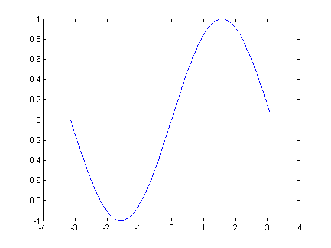
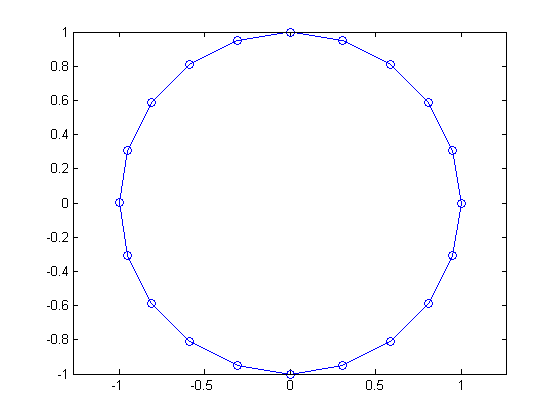

Contents
main_sample_function
function main_sample_function %MAIN_SAMPLE_FUNCTION Summary of this function goes here % This is a demo to show how the "publish_all_functions" works. % Call the first function. sample_one % Call the second function. sample_two % Done. disp('Mission Accomplished!!!'); end
sample_one
function sample_one %SAMPLE_ONE Summary of this function goes here % Detailed explanation goes here % It is a sample function one. :) disp('We are here in sample function one!!!'); x = -pi:.1:pi; y = sin(x); plot(x,y); end
We are here in sample function one!!!
sample_two
function sample_two %SAMPLE_TWO Summary of this function goes here % Detailed explanation goes here % It is a sample function two. :) disp('We are here in sample function two!!!'); t = 0:pi/10:2*pi; plot(exp(i*t),'-o'); axis equal; end
We are here in sample function two!!! Mission Accomplished!!!